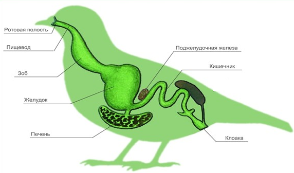
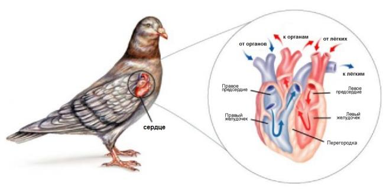
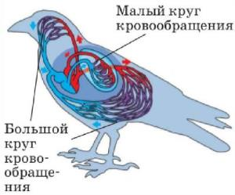
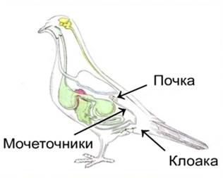
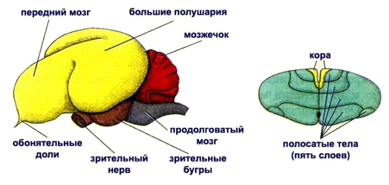
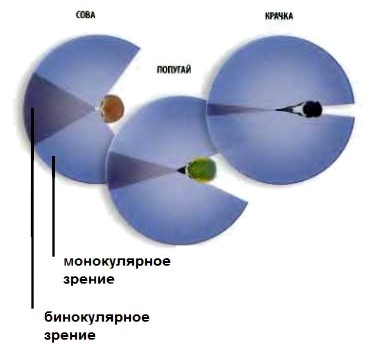
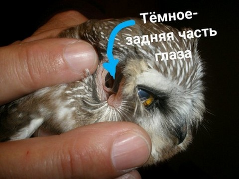
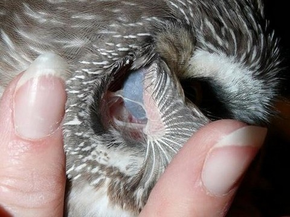

Главная
Строение внутренних органовПищеварительная системаПищеварительная система птиц, так же как и других позвоночных животных, представлена пищеварительным трактом и железами.  Пищеварительная система Пищеварительные железы — выделяют вещества (ферменты), необходимые для переваривания пищи.
Пищеварительная система начинается клювом. Клюв ограничивает ротовую полость. В ротовой полости есть язык. Зубы отсутствуют. Кровеносная системаКровеносная система замкнутая, состоит из четырёхкамерного сердца и сосудов. Два круга кровообращения.
 Сердце птиы в разрезе Сердце птицы имеет полную перегородку и состоит из 4 -х камер: двух предсердий и двух желудочков. Дуга аорты — только правая (левая редуцирована).
При движении по телу кровь проходит два круга:  Пути движения крови в птице Обмен веществУ птиц высокий уровень обмена веществ. Теплокровные животные — это животные с постоянной температурой тела, которая не зависит от температуры окружающей среды. Выделительная системаОрганы выделения представлены двумя тазовыми почками. От почек отходят мочеточники, открывающиеся в клоаку. Мочевого пузыря нет (приспособление к облегчению веса тела).  Выделительная система птицы Нервная системаНервная система птиц развита хорошо. Увеличивается головной мозг и его масса. Развиваются зрительные бугры среднего мозга и мозжечок. Развитие мозжечка связано со сложной координацией движений.  Головной мозг птицы Органы чувствХорошо развиты органы зрения и слуха.  Строение глаза птицы Птицы обладают высокой остротой зрения, Органы слуха состоят из внутреннего и среднего уха с барабанной перепонкой. Слуховая косточка одна. Органы обоняния развиты слабо. |
|
|
 Чем слышат птицы. Часть глазного яблока заходит в ушной канал. От автора: "Жудко". |
|
|
|

 Подняться наверх
Подняться наверх